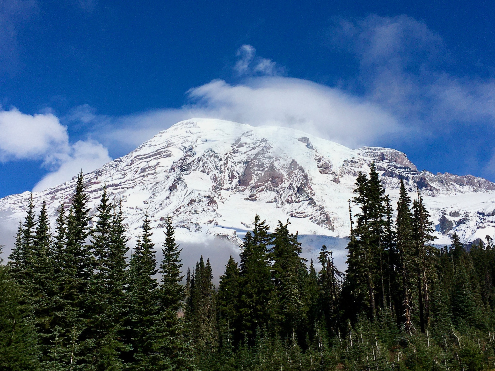
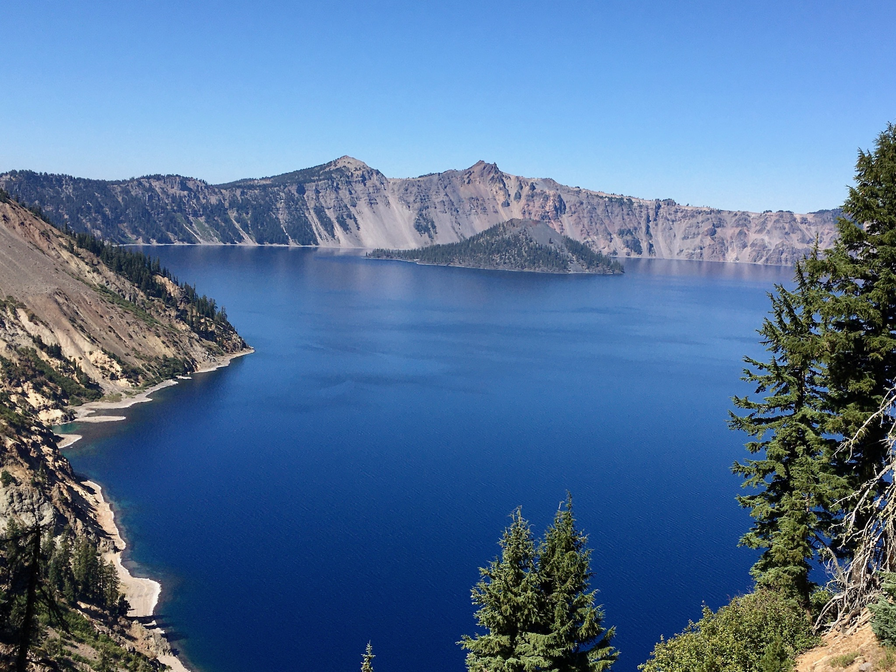
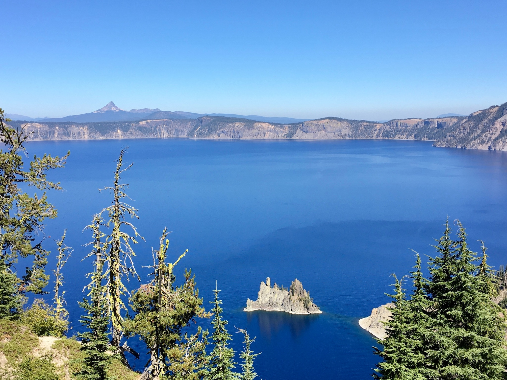

“Let’s see the Oregon Coast,” she said
The Northwest Hot-lap began with a simple idea: the four of us were ready to travel after COVID. Cassie’s mother, Gena, selected the Oregon coast. Cassie and David had never traveled there, which made the choice easy to embrace. Cassie’s parents had watched the Mighty V Passage, and wanted an adventure of their own. The Utah trip had worked, and we believed the same approach could work again.
We chose to fly to Seattle and follow U.S. 101 down the Washington and Oregon coasts as far as Coos Bay, OR. Over two weeks, we fully immersed ourselves in the northwest coasts and forests. Cassie and David are planning to revisit this area in 2027!
This was the trip that proved the Mighty V Passage had not been a one-time success. We were built for the road.
The driving tour model
Driving duties were shared by Gena and David. Cassie and her father, Bill, rode along, sharing navigation duties. Again, the car experience proved to be a perfect travel style. The car gave us economical, flexible movement. Modest lodging gave us sleep and shelter. Together they allowed us to cover substantial mileage while treating the windshield as our primary way of experiencing the region. We began to recognize this as a complete form of travel: a driving tour.
That distinction matters in the larger story of Cassie and David. The Northwest Hot-lap sits between the Mighty V Passage and Ivan Schenklemeier, our later minivan camper. Ivan did not replace the driving-tour model. It expanded the model by bringing the overnight inside the vehicle.
Mist, Moss, and a real forest!
Olympic National Park gave us the atmosphere people hope to find in the Pacific Northwest. The weather was rainy without becoming a downpour—more mist than storm. Rather than spoiling the day, it made the forest feel cooler, greener, and more mysterious. The Hall of Mosses became one of our favorite hikes.
Olympic seemed almost organized, planted, and tended even though it was wild. Identical trees extended across distances too large to absorb. The combination of water, mist, and forest helped define the Washington portion of the trip. The weather became part of the experience rather than something to escape. Olympic felt more like Olympic because it was damp.
The park remains unfinished business in the best way. We can’t wait to get the PourHouse there!

Hundreds of miles with an angry ocean
We had seen the Pacific before - many times. But this was our first time driving ALONG the ocean for long miles. Everywhere we went, the ocean looked powerful. Waves rose, sprayed, and crashed into offshore rocks and dark formations. Cassie’s description was simpler: the ocean looked angry. David never saw a place where he felt tempted to spread out a blanket and settle in for a conventional Florida beach day. The coast was beautiful and compelling, but it felt cold, wild, and slightly dangerous rather mysterious.
The route rewarded us for pulling over. Haystack Rock—the “Goonies rock”—was a definite favorite. We stopped at the Tree of Life, where exposed roots held a coastal tree above the earth. Viewpoint after viewpoint revealed enormous rocks and crashing water. We began laughing at how frequently coastal landmarks seemed to have the Devil in their names: Devil’s Spit, Devil’s Cauldron, Devil’s Crack and more.

Sunset bubbles and the value of pulling over
We stayed in a lively coastal town where our lodging was in the center of things, close enough that the town and beach felt immediately accessible. At sunset, a man was making enormous bubbles near the water. It was not a major attraction or a reserved activity. It was simply a beautiful evening with a playful public scene unfolding on the beach. We walked down to the water and joined the atmosphere.
That memory captures the Northwest Hot-lap better than any itinerary could. The trip had major destinations, but some of its best scenes were ordinary moments encountered at the right time: mist in a forest, a roadside pullout, an exposed-root tree, a stranger making giant bubbles, or a rock formation nobody in the car can name years later.
This trip also sharpened how we found those moments. Cassie began searching Google while we were moving, identifying possibilities in real time. We had used maps for directions before, but the Northwest Hotlap helped us understand Google Maps as both a planning board and a discovery tool. A route did not have to be only a line between destinations. It could be surrounded by saved stars, oddities, viewpoints, restaurants, PourHouses, and possibilities.
Later trips would become more deliberate. We would mark promising stops before leaving and continue searching live from the passenger seat. The habit began to look like a travel system.

PourHouse hunting becomes a thing
In Washington, we stopped at businesses using the PourHouse name. Cassie especially remembers a brightly colored seaside location where we sat outside. Somehow, PourHouse pint glasses were collected! In Portland, we found another PourHouse that operated like a food truck and stopped for a beer.
PourHouse was also the name of our boat, so finding businesses with the same name had become a game and a reason to stop. Bars, taverns, coffee shops, wine shops, and other PourHouse-named businesses gave us a recurring thread that could follow us through otherwise unrelated places.
Years later, PourHouse has become the name of our Sprinter. On the Northwest Hot-lap, it was still a private joke and a scavenger hunt—but it was already helping us turn travel into a connected story.
Willamette without reservations
When we turned inland, the Willamette Valley gave us another example of successful improvisation. We visited two wineries without reservations. At one, we sat outside. At another, a family-owned operation, we took a small tour. We had not arrived with high expectations or a tightly planned wine itinerary. Both stops were fun precisely because we had happened upon them.
The wineries reinforced something central to how Cassie and David still travel: preparation creates possibilities, but excessive scheduling can eliminate them. We needed enough structure to keep the hot-lap moving and enough openness to walk into a winery we had not known existed that morning.
Introducing Ivan, the world’s greatest minivanRV
The Mighty V Passage had introduced us to the monumental interior West. The Northwest Hot-lap added temperate rainforest, volcanic landscapes, wine country, and hundreds of miles of cold, angry Pacific coastline. Together, the two trips showed us that our windshield could work as the front row of a driving tour—and that there were vistas beyond our experience.
That recognition created wanderlust.
Ultimately, these adventures led to the purchase of Ivan and its transformation into a minivanRV. The Prius and rental car taught us how little we needed. Ivan would add a bed, rooftop storage, and allow us to travel with our bed.
The Northwest Hot-lap confirmed that our style of travel could be repeated: use an efficient car, reserve lightly, mark possibilities, search as we go, pull over often, and let the road interrupt the plan.
We thought we were taking Cassie’s parents to see the Northwest, but we were proving that the road could become our way of life.